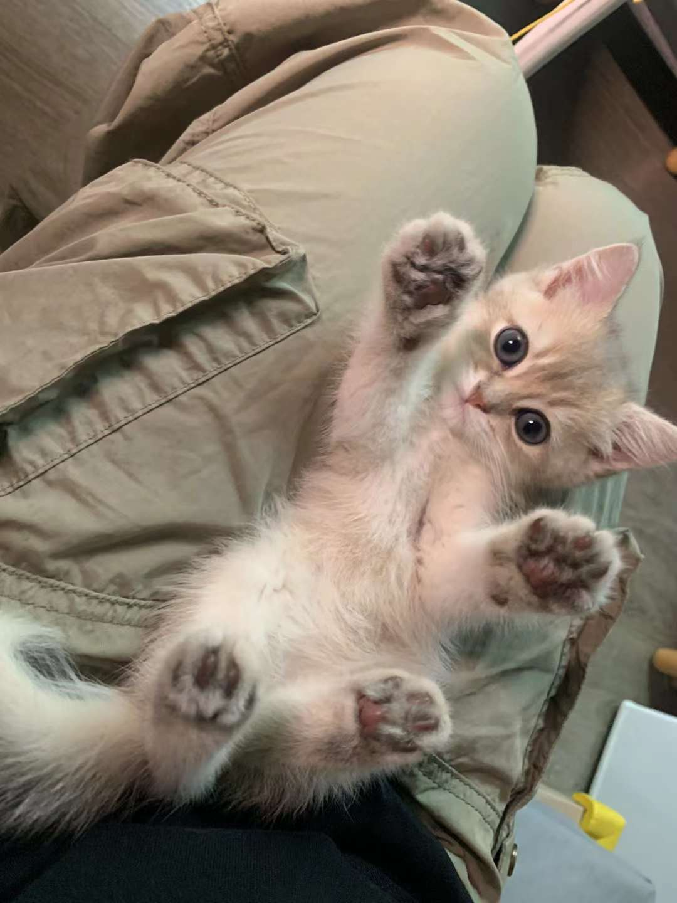

Welcome to Jojo's home
Jojo Bear
熊赳赳

See more
Jojo's photos
.
Jojo's Lists
Things Jojo loves:
Cat treats
Tiny mouse toy
Finger
He loves
taking a nibble
of my fingers.
Top 3 things Jojo hate:
Mite treatment
Orange peel
Paw fur trimming
Being
frightened
when seeing the trimmer.